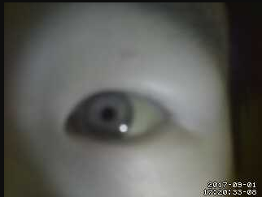

Course project of UCSD's CSE237A. Team of two. Winter 2017.
Works
Programmed image processing software for real-time pupil tracking using OpenCV 3 with Python 2.7 binding
Integrated the pupil tarcking software with the mechanical part driven by servo motors
Improved the performance of the system by using hardware PWM and IR lighting
Infrared
One interesting thing I noticed during the project is that by using IR light source and a camera without IR filter, we will be able to highlight the pupil and make it easier to locate the eye center.

Raspberry Pi 3 PWM
PWM is used to control the servo motors. We used some random GPIO to do the PWM work at first and we suffered the jittering problem. The reason is things like interupts will vary the duty cycle of the PWM wave. To avoid that, we used two dedicated PWM ports on Raspberry Pi.
Results
The video shown below was not the best result we got, because we were not using IR lighting in this record. And please kindly ignore the backgroud music :).